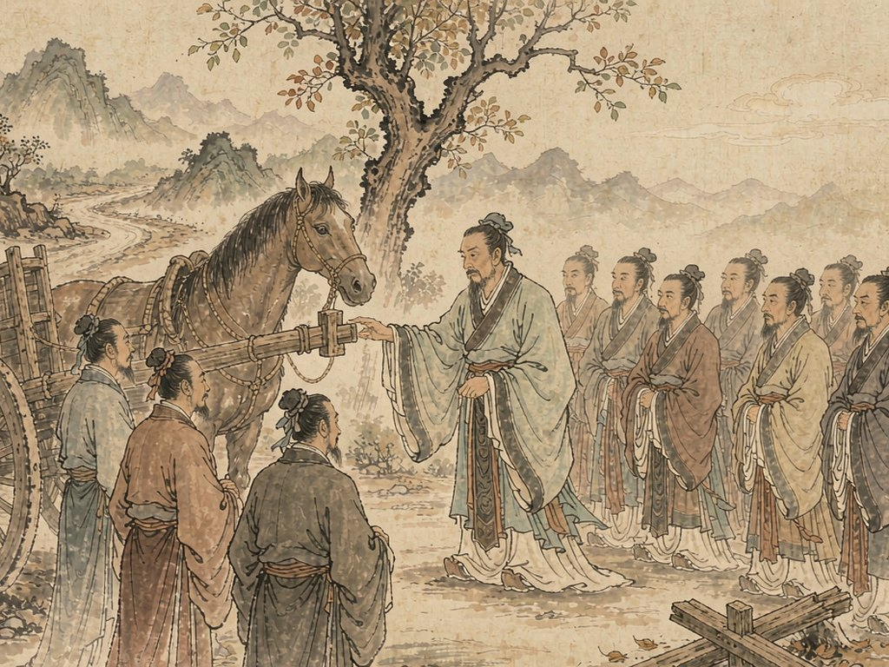

📖 论语每日金句
你知道吗？“不亦乐乎”“温故知新”“三省吾身”这些天天挂在嘴边的话，其实都来自两千多年前的《论语》。孔子和他的弟子们大概想不到，他们随口说的话，会变成我们今天最常用的成语。这里把出自《论语》的金句一网打尽，每天学两条，轻松又长知识。
📅 第八天
✨ 共 2 条
🏠 返回总目录
✨ 论语金句总览
第 15 条
知之为知之
为政篇第十七章（2.17）
释义：
知道就是知道，不知道就是不知道。形容诚实面对自己的认知边界。
原文：
子曰：“由，诲女知之乎！知之为知之，不知为不知，是知也。”
🏛️ 孔子 · 教导子路
🏙️ 现代 · 坦诚面对
使用场景：
求知、科研、做人、职场。“知之为知之，不知为不知，是知也。”
第 16 条
人而无信
为政篇第二十二章（2.22）
释义：
人没有信用，不知道他怎么能行。形容信用是立身之本。
原文：
子曰：“人而无信，不知其可也。大车无輗，小车无軏，其何以行之哉？”

🏛️ 孔子 · 论车輗
🏙️ 现代 · 信用场景
使用场景：
评价信用、商业合作、朋友交往。“人而无信，不知其可也。”
📅 第八天 · 共 2 条
← 昨日学习
明日学习 →